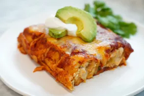

Enchiladas

Enchiladas! A delicious dish from south of the border, great with beef, chicken, or your favorite choice of protein!
Enchilada Ingridients:
- 1.25 pounds chicken (or portein of your choice)
- 2 teaspoons salt
- 2 teaspoons chili powder
- 1.5 teaspoons cumin
- 12 tortillas
- 2 tablespoons butter
- 1 tablespoon olive oil
- 1 small onion
- 1 medium poblano pepper
- 1 small bell pepper
- 1 can diced tomatoes
- 8 ounces cream cheese
- 4 cups shredded cheese
- 1 cup refried beans
- 1 can red enchilada sauce
Enchilada Steps:
- Preheat oven to 325 degrees F
- Place chicken on foil and season
- bake in the preheated oven until tender (about 50 minutes)
- Toast each tortilla over medium heat in a skillet
- Sautee chopped onions and peppers
- Add chicken, beans, and sauteed onions and peppers to each tortilla
- Arrange tortillas in a single layer and pour enchilada sauce on top
- Bake about 30 minutes
Enjoy your enchiladas, hombres!
Go Home